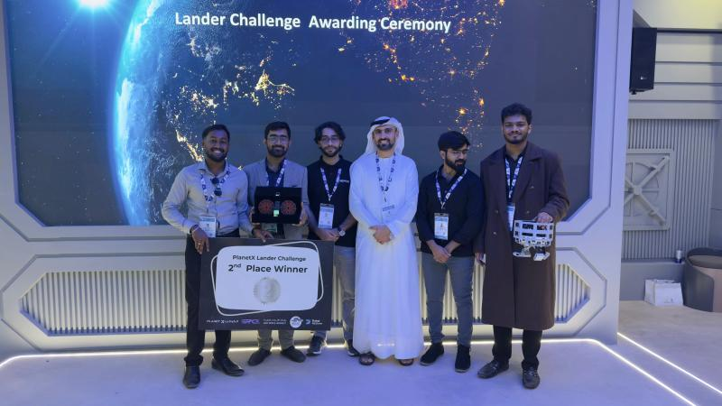

I design and build fixed-wing UAVs: aerodynamic sizing, stability analysis, CFD and FEA, composite and 3D-printed airframes, and ArduPilot flight-controller integration.
B.Tech Aerospace Engineering, CGPA 9.68 · Bengaluru · Available immediately
An actuated telescoping tail boom changes the horizontal tail volume coefficient (0.36 to 0.44) in flight, trading stability against agility. An ESP32-controlled battery carriage offsets the shift, limiting centre-of-gravity movement to 6.16 mm.
Loading 3D model…
Tail arm
790 mm
Tail volume coefficient
0.36
Drag to rotate, scroll or pinch to zoom. The blue-grey parts are the tail group that slides. Simplified exterior model; tail volume coefficient is interpolated linearly between the two end positions.
CFD (ANSYS Fluent, k-omega SST, 3.6M cells): pitch stiffness dCm/dα steepens from −0.0031 to −0.0049 per degree as the tail extends. L/D 8.51 extended vs 7.61 retracted (15 m/s, 0°).
FEA (SolidWorks, 3g limit load): minimum factor of safety 3.69 on the wood spars and 21.7 on the carbon-fibre boom.
Build: foam-core, fibreglass, carbon and wood airframe; ground taxi-tested to 5 m/s. Flight trials are pending GCAA airspace clearance.
Output: paper presented at ASET 2026; copyright application filed.
Drawn in SolidWorks from foamboard plans and printed in PETG. The first airframe crashed after take-off from over-sensitive pitch control. The rebuild, with spiral-vase PETG wings and a three-piece fuselage, handled better but ran out of battery unexpectedly and crashed on its second flight. Short endurance traced back to high structural weight.
Loading 3D model…
Drag to rotate, scroll or pinch to zoom. Two section sliders, one active at a time: a cross-section from the nose and a side section from the left wingtip (halfway is the centreline). The cut face is shaded blue-grey.
Led preliminary sizing and concept development for UAE weather conditions. Proposed a hybrid propulsion architecture (IC engine plus dual electric) and began prototype fabrication in carbon fibre and aluminium, with 3D-printed wing panels.
Detailed design and 3D-printed prototype of a six-wheel rocker-bogie rover with a six-axis arm, for a lunar-rover graduation project by Gopika Sankar. I did the detailed CAD and the additive manufacturing in PETG. Field-tested on sand and gravel in Dubai.
The challenge was to design, fabricate and test a CubeSat lander that survives a 2 m Earth-gravity drop test. My role was rapid prototyping: CAD design, motion simulation and 3D-printed fabrication. We ran more than 20 tests to gather qualitative inputs for optimising the design.

PlanetX Lander Challenge awarding ceremony.
1st Prize, Third Emirates Robotic Competition (ERC 2025)
American University of Sharjah · Apr 2025
Autonomous sea-cleaning surface robot competition, held at Amity University Dubai. I did the complete design, simulation, validation and additive manufacturing of the vehicle frame, an 800 mm catamaran hull, handled the power train on my own, and worked with my teammates on hardware and software integration.